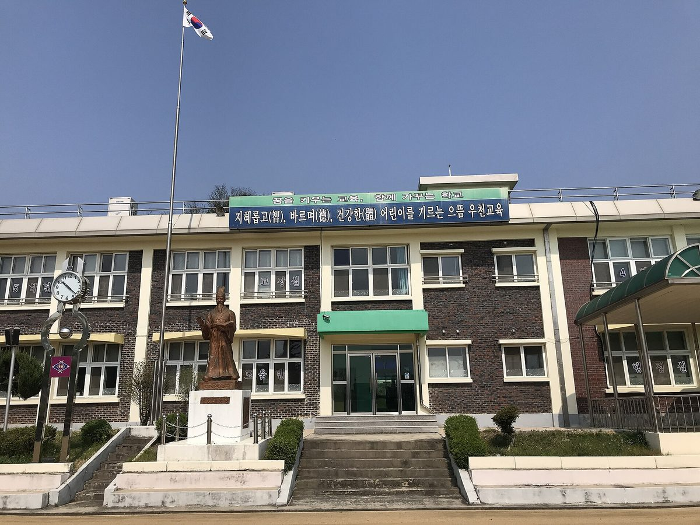

행안부, 주한 외교사절 정책설명회에 사회연대경제 넣고 횡성 하대리 햇빛소득마을 방문 일정 잡아

29~30일 강원 원주·횡성·홍천·춘천 일원, 재난안전 중심이던 소개 범위를 정책 전반으로 넓혀…하대리는 햇빛연금 협동조합 중심으로 주민 65가구 참여, 1,000kW 태양광 추진 계획
행정안전부가 29일부터 30일까지 강원 원주·횡성·홍천·춘천 일원에서 주한 외교사절 대상 정책설명회를 열고, 국정과제로 추진하는 사회연대경제 정책과 함께 횡성군 우천면 하대리의 햇빛소득마을을 소개한다. 2018년부터 해마다 열어 온 이 설명회에는 지난해 103개국 외교사절 93명이 참석했으며, 올해는 재난안전 위주이던 소개 범위를 AI 기반 행정·공공서비스, 사회연대경제 활성화, 시민안전보험과 중앙합동재난피해자지원센터, AI를 활용한 디지털 범죄 과학수사 등 행안부 정책 전반으로 넓혔다. 대사와 외교관, 외신기자 등은 원주 국립과학수사연구원에서 설명을 들은 뒤 하대리를 찾아 주민 참여형 태양광 사업을 둘러보는 일정이다. 하대리는 마을 햇빛연금 협동조합을 중심으로 주민 65가구가 참여해 1,000kW 규모 태양광 발전사업을 추진할 계획이며, 사업비와 착공 시기, 수익 배분 방식은 알려지지 않았다. 행안부는 사회연대경제를 저출생·고령화와 지역소멸 같은 복합 위기에 대응하는 정책으로 설명했고, 김민재 행안부 차관은 이번 설명회를 "대한민국 행정의 다양한 경험을 국제사회와 나누는 자리"라고 밝혔다.
시민에너지 관점
정부가 외국 손님에게 보여 줄 한국 행정의 현장으로 과학수사 연구기관과 나란히 햇빛소득마을을 골랐다는 것은, 주민이 협동조합으로 묶여 마을 발전소의 주인이 되는 방식이 사회연대경제 정책의 대표 얼굴이 됐다는 뜻이다. 아직 짓지 않은 1,000kW 계획을 보여 주는 것이 전시성 일정 아니냐는 지적이 나올 수 있지만, 독일 니더작센의 윈데 마을이 2005년 주민 협동조합 소유의 바이오에너지 발전·열공급을 돌리기 시작한 뒤에야 국내외 견학단이 찾는 '바이오에너지 마을'이 됐듯, 본보기의 힘은 계획서가 아니라 주민이 실제로 전기를 팔고 수익을 나누는 장부에서 나온다. 65가구가 함께한 협동조합이 계통 연결과 사업비 조달이라는 고개를 넘어 가동에 이를 때 비로소 주민이 에너지 생산에 참여하고 그 수익을 지역과 나눈다는 설명이 빈말이 되지 않는다. 정부는 외교사절에게 보여 준 만큼 계획 단계에 머문 마을들이 계통 접속과 저리 자금, 행정 지원을 한 창구에서 받도록 사회연대경제 지원 체계와 햇빛소득마을 사업을 묶고, 다음 설명회에서는 가동 중인 마을의 수익 장부를 내보일 수 있어야 한다.
출처: 퍼블릭타임스 2026-10-29 김현정 원문 보기
韓国行政安全部、駐韓外交使節向け政策説明会に社会連帯経済を加え、横城・下大里の「日差し所得村」訪問を日程に
29～30日に江原道の原州・横城・洪川・春川一帯で開催、災害安全中心だった紹介範囲を政策全般に拡大…下大里は日差し年金協同組合を中心に住民65世帯が参加、1,000kWの太陽光を推進する計画
韓国の行政安全部が29日から30日まで、江原道の原州・横城・洪川・春川一帯で駐韓外交使節向けの政策説明会を開き、国政課題として進める社会連帯経済政策とともに、横城郡隅川面下大里の「日差し所得村（햇빛소득마을）」を紹介する。2018年から毎年開いているこの説明会には昨年、103か国の外交使節93人が参加しており、今年は災害安全が中心だった紹介範囲を、AIを活用した行政・公共サービス、社会連帯経済の活性化、市民安全保険と中央合同災害被害者支援センター、AIを使ったデジタル犯罪の科学捜査など、行政安全部の政策全般に広げた。大使や外交官、外国メディアの記者らは、原州の国立科学捜査研究院で説明を聞いた後、下大里を訪れて住民参加型の太陽光事業を見て回る日程だ。下大里は村の日差し年金協同組合を中心に住民65世帯が参加し、1,000kW規模の太陽光発電事業を推進する計画で、事業費や着工時期、収益の分配方法は明らかになっていない。行政安全部は社会連帯経済を少子化・高齢化や地方消滅といった複合的な危機に対応する政策と説明し、キム・ミンジェ行政安全部次官は今回の説明会を「韓国行政のさまざまな経験を国際社会と分かち合う場」だと述べた。
市民エネルギーの視点
政府が外国からの客に見せる韓国行政の現場として、科学捜査研究機関と並んで日差し所得村を選んだことは、住民が協同組合としてまとまり村の発電所の持ち主になる方式が、社会連帯経済政策の代表的な顔になったことを意味する。まだ建設前の1,000kWの計画を見せるのは見せ物的な日程ではないかとの指摘もありうるが、ドイツ・ニーダーザクセン州のユーンデ村が2005年に住民協同組合所有のバイオエネルギー発電・熱供給を動かし始めてようやく、国内外から視察団が訪れる「バイオエネルギー村」になったように、手本の力は計画書ではなく、住民が実際に電気を売り収益を分け合う帳簿から生まれる。65世帯が加わった協同組合が系統接続と事業資金の調達という峠を越えて稼働にたどり着いてこそ、住民がエネルギー生産に参加しその収益を地域と分け合うという説明が空言にならない。政府は外交使節に見せた分だけ、計画段階にとどまる村々が系統接続や低利資金、行政支援を一つの窓口で受けられるよう、社会連帯経済の支援体制と日差し所得村事業を結びつけ、次の説明会では稼働中の村の収益帳簿を示せるようにすべきだ。
出典: パブリックタイムズ 2026-10-29 キム・ヒョンジョン 原文を読む
韩国行政安全部在驻韩外交使节政策说明会中加入社会连带经济，并安排参观横城下大里"阳光收入村"
29日至30日在江原道原州、横城、洪川、春川一带举行，介绍范围由灾害安全扩大到政策全领域……下大里以阳光年金合作社为中心，65户居民参与，计划推进1,000kW光伏
韩国行政安全部于29日至30日在江原道原州、横城、洪川、春川一带举办面向驻韩外交使节的政策说明会，在介绍作为国政课题推进的社会连带经济政策的同时，介绍横城郡隅川面下大里的"阳光收入村"（햇빛소득마을）。该说明会自2018年起每年举办，去年有来自103个国家的93名外交使节参加；今年将以往以灾害安全为主的介绍范围扩大到行政安全部的整体政策，包括基于人工智能的行政与公共服务、社会连带经济活性化、市民安全保险与中央联合灾害受害者支援中心，以及利用人工智能的数字犯罪科学侦查等。按照日程，大使、外交官和外国媒体记者等在原州国立科学搜查研究院听取说明后，将前往下大里参观居民参与型光伏项目。下大里计划以村里的阳光年金合作社为中心、由65户居民参与，推进1,000kW规模的光伏发电项目，项目费用、开工时间和收益分配方式尚未公开。行政安全部将社会连带经济介绍为应对少子化、老龄化和地方消亡等复合危机的政策，行政安全部次官金敏在表示，此次说明会是"与国际社会分享大韩民国行政多样经验的场合"。
市民能源视角
政府把阳光收入村与科学侦查研究机构并列，选为向外国客人展示的韩国行政现场，这意味着居民以合作社形式联合起来、成为村级电站主人的方式，已成为社会连带经济政策的代表面孔。有人或许会质疑，展示一个尚未建成的1,000kW计划是否只是作秀；但德国下萨克森州的于恩德村是在2005年开始运营由居民合作社所有的生物能源发电和供热之后，才成为国内外考察团纷至沓来的"生物能源村"——示范的力量不在计划书，而在居民实际卖电、分享收益的账本。只有当65户居民组成的合作社跨过并网和融资这两道坎、真正投入运行，"居民参与能源生产并与地方分享收益"的说法才不会落空。政府既然向外交使节作了展示，就应把社会连带经济支援体系与阳光收入村事业结合起来，让停留在计划阶段的村庄能在一个窗口获得并网、低息资金和行政支持，并在下一次说明会上拿出正在运行的村庄的收益账本。
来源: 公共时报（Public Times） 2026-10-29 金贤贞（Kim Hyun-jung） 查看原文
Korea's interior ministry adds the social and solidarity economy to its briefing for foreign diplomats, with a visit to a Hoengseong sunlight income village on the schedule
Held Oct. 29-30 around Wonju, Hoengseong, Hongcheon and Chuncheon in Gangwon, the briefing widens its scope from disaster safety to the ministry's broader policies; in Hadae-ri, 65 households are taking part through a sunlight pension cooperative that plans a 1,000kW solar project
South Korea's Ministry of the Interior and Safety is holding a policy briefing for foreign diplomats from Oct. 29 to 30 across Wonju, Hoengseong, Hongcheon and Chuncheon in Gangwon Province, presenting its social and solidarity economy policy, a national policy task, along with the sunlight income village (haetbit sodeuk maeul) in Hadae-ri, Ucheon-myeon, Hoengseong County. The briefing has been held every year since 2018, drawing 93 diplomats from 103 countries last year, and this year it widens its scope from mainly disaster safety to the ministry's broader policies, including AI-based administration and public services, promoting the social and solidarity economy, citizen safety insurance and the central joint disaster victim support center, and AI-assisted forensic investigation of digital crime. Ambassadors, diplomats and foreign correspondents are scheduled to hear presentations at the National Forensic Service in Wonju before visiting Hadae-ri to look at its resident-participation solar project. In Hadae-ri, 65 households are taking part through the village's sunlight pension cooperative, which plans to develop a 1,000kW solar power project; the project cost, construction schedule and how revenue will be shared have not been disclosed. The ministry described the social and solidarity economy as a policy response to compound crises such as low birth rates, population aging and the decline of rural communities, and Vice Minister Kim Min-jae called the briefing "a place to share Korea's diverse administrative experience with the international community."
Citizen Energy View
That the government picked a sunlight income village, alongside a forensic science institute, as a showcase of Korean administration for foreign guests means that residents joining together in a cooperative to own their village power plant has become a face of its social and solidarity economy policy. Some may ask whether showing a 1,000kW plan that has not yet been built is mere display, but the German village of Jühnde in Lower Saxony became a "bioenergy village" visited by study groups from home and abroad only after its resident-owned cooperative began running bioenergy power and heat supply in 2005: a model's strength lies not in the plan but in the ledger showing residents actually selling electricity and sharing the income. Only when the 65-household cooperative clears the hurdles of grid connection and financing and starts operating will the promise that residents take part in energy production and share the proceeds with their community ring true. Having shown it to diplomats, the government should link its social and solidarity economy support system with the sunlight income village program so that villages still at the planning stage can get grid access, low-interest finance and administrative help through a single window, and at the next briefing it should be able to show the income ledger of a village that is already running.
Source: Public Times 2026-10-29 Kim Hyun-jung Read the original